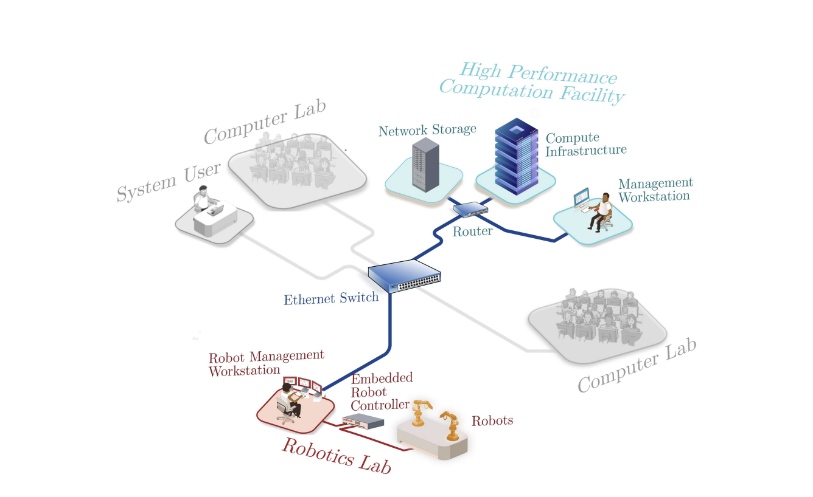
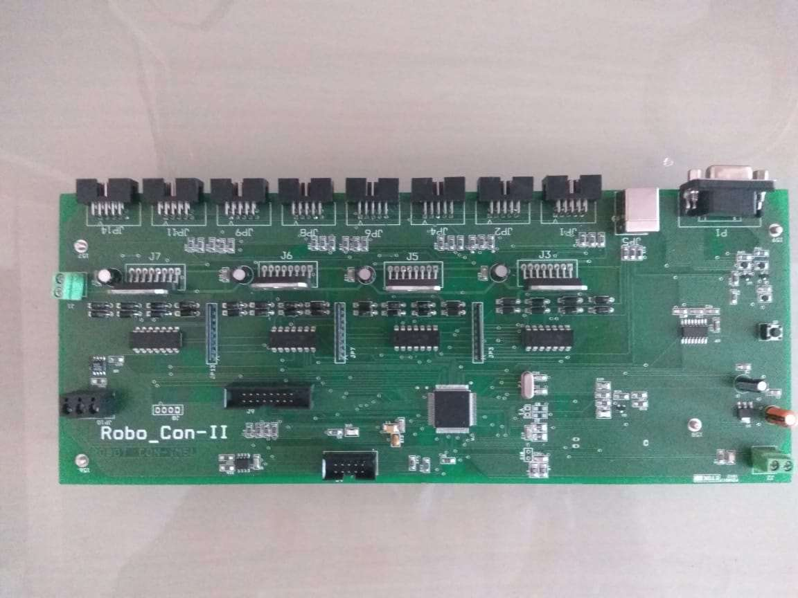
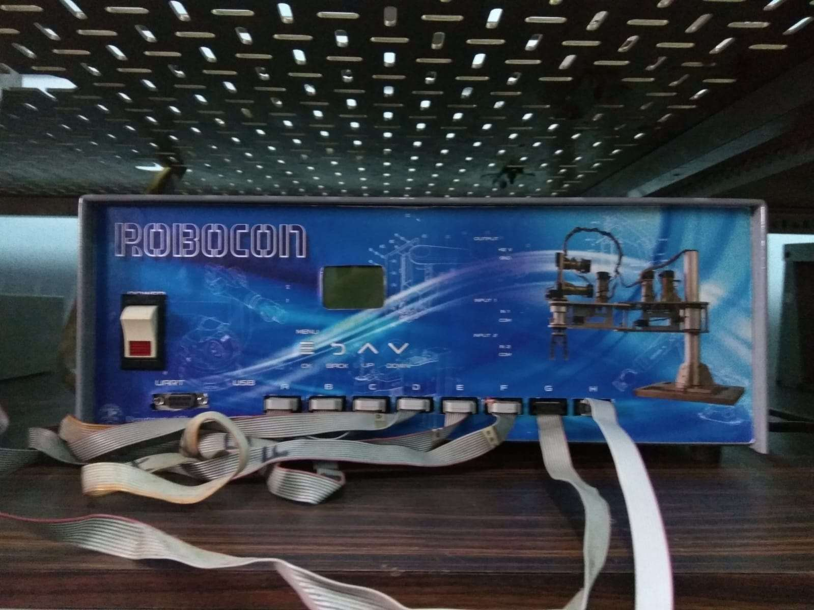
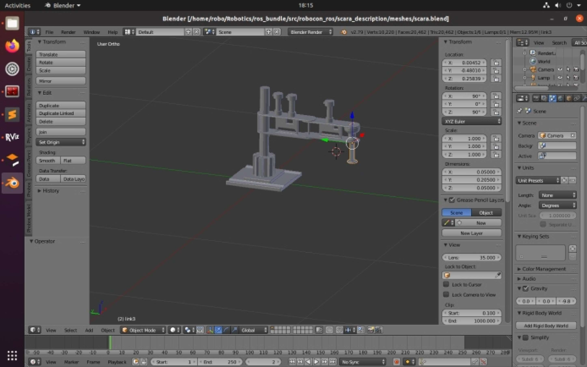
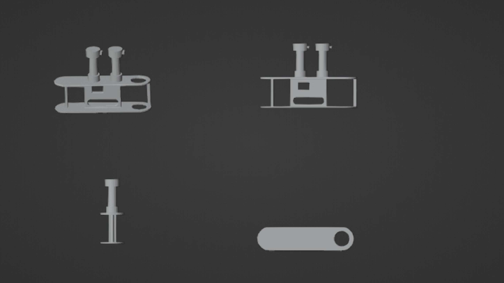

A connected robotics lab
A SCARA arm driven by a custom embedded controller, managed from a ROS workstation and networked to a high-performance computing facility. The robot is part of one ecosystem: it records demonstrations, the cluster trains models on them, and the trained models come back to drive the arm. It served every robotics project in my PhD.
One network from the robot to the GPU cluster
The robotics lab, the computing facility and the teaching labs share one Ethernet network. In the robotics lab, a workstation runs ROS and talks to the embedded controller, which drives the robots. Through the switch and router, it reaches network storage and the compute cluster, where models are trained. A management workstation looks after the cluster, and students and researchers use the same compute from the computer labs.

Follow the data
Pick a workflow to see which parts of the ecosystem it uses and which way the data moves.
The computing side, its layered software stack and the GPU specifications, is described in ML Training Platform. The full system design is in thesis chapter 7 (PDF).
Simulation and hardware paths
Switch between the software path (planning and simulation) and the hardware path (the controller board and motors). Hover a block to trace its links, click it for details.
Quadrature decoding
Each motor has two optical sensors 90° out of phase (channels A and B). Drag the slider to move the shaft one transition at a time. The three decoding modes count different edges, so resolution goes up from X1 to X4.
The counter is interrupt-driven on the board, so no edge is missed even at high shaft speeds.
The controller board
The Robo_Con-II board is a custom PCB that drives up to eight motors. It was built for this arm and is also reusable for other robots with up to eight motors.


Board specification
Firmware responsibilities
- Interrupt-driven pulse counter converts encoder edges into angles in degrees.
- Reads effort and direction commands over UART and returns absolute joint positions.
- Hard-homing sequence: each joint runs to its limit switch, reverses slowly, and sets zero.
- Stall detection: flags high effort with no movement for a set time, then stops the motor.
- Backward-compatible configuration, so the same firmware supports different hardware setups.
3D model
The arm's 3D model starts as CAD parts. Each link is measured on the real robot, modelled in Blender, exported to URDF, and then used in simulation and MoveIt.


Photos of the physical arm are not included yet. I'll add them once they're available.
Control loop and homing
UART-driven control loop
Reads commands from the ROS host, updates effort and direction, then sends the joint positions back.
Two-stage hard-homing
Each joint moves to its limit switch, reverses slowly to trigger it, and sets absolute zero. Encoders don't keep position across power cycles, so homing runs again after a power loss.
Stall detection
Flags a stall when effort is high while position barely changes for a set time. The motor is then stopped or a recovery starts.
Known limitations
The arm dates from the early 1990s. It shows motor slip and wear, and supports only position control.